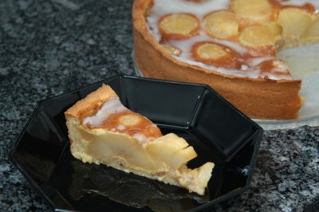

| Zutaten für 12 Portionen: | |
| Einkaufen: | |
| 180 g | Butter |
| 1dl | Vollrahm |
| 130 g | Zucker |
| 150 g | Puderzucker |
| 1 TL | Vanillezucker |
| 250 g | Weissmehl |
| 3 | Eier |
| 40 g | Mandeln |
| 1 kg | Äpfel |
| 1 | Zitrone |
| 1 dl | eventuell Weisswein |
| 26 cm | Springform, falls nicht vorhanden |
| Teig: | |
| 180 g | Butter |
| 40 g | Zucker |
| 1/2 TL | Salz |
| 1 | Ei |
| 3 EL | Vollrahm |
| 250 g | Weissmehl |
Butter schaumig rühren
Alle übrigen Zutaten mit Ausnahme des Mehls dazugeben.
Das Mehl dazu mischen und den Teig zusammendrücken. 30 Minuten kühl ruhen lassen.
Springformboden ausbuttern.
2/3 des Teigs 2 mm dünn auswallen und Springformboden damit belegen.
Den Rand anfeuchten. Mit dem Teigrest eine Rolle formen und am Bodenrand auflegen. Springformring befestigen, Teigrolle mit befeuchteter Gabel hochziehen.
| Mandelmasse: | |
| 40 g | Mandeln |
| 30 g | Zucker |
| 3-5 EL | Wasser |
Geschälte und geriebene Mandeln mit Zucker und Wasser bei kleiner Hitze verrühren, bis sich eine feste Masse bildet. Auf den Teigboden ausstreichen.
| Apfelfüllung: | |
| 1 kg | Äpfel |
| 1 dl | Wasser oder Weisswein |
| 100 g | Zucker |
| 1 TL | Vanillezucker |
| 1 | abgeriebene Zitronenschale |
| 2 | Eier |
| 1/2 dl | Vollrahm, geschlagen |
Äpfel schälen, halbieren
Äpfel im Zuckerwasser mit Vanillezucker und Zitronensaft weichkochen.
Auskühlen
Fächerartig einschneiden.
Auf dem Kuchenboden verteilen.
Den zurückbehaltenen kalten Saft mit 2 Eiern schaumig rühren und Rahm darunter ziehen. Die Äpfel damit bedecken.
Den Kuchen in vorgeheiztem Backofen (200°C) auf unterster Rille einschieben. 40 Minuten backen.
| Glasur: | |
| 150 g | Puderzucker |
| 2 EL | Zitronensaft |
Während des Abkühlens mit Zucker-Glasur überziehen.
Herbert Eigenmann, Code: AAF
Gelang im Juni 2007 sensationell gut. RE
@LINKBACK_TAG@ @WAKELOCK@